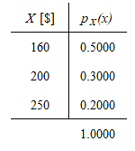
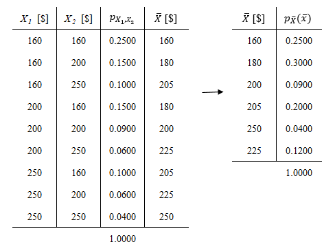

Distribución del muestreo y Teorema Central del Límite
Ejercicios Guía de TP
E6.1
Un vendedor ofrece de un mismo producto, tres calidades diferentes. De todos los clientes que compran un sólo artículo, el 20% compra el de más alta calidad cuyo costo es de $250, el 30% compra de calidad media cuyo costo es de $200, y el 50% restante compra el de más baja calidad cuyo costo es de $160. Sea \(X\) el pago efectuado por un cliente seleccionado al azar que se lleva un sólo artículo.
Planteo
- \(X\): Variable aleatoria discreta que representa el pago efectuado por un cliente seleccionado al azar que adquiere un solo artículo, $[X] = $$
a) Obtener la distribución de probabilidad puntual de \(X\) y hallar \(E(X) = \mu\) y \(V(X) = \sigma^2\).
La obtención de la distribución de probabilidad puntual de \(X\), \(p_{X}(x)\), no presenta dificultad dado que se halla definida en el enunciado, mientras que el valor esperado y la varianza de \(X\) se obtienen sencillamente aplicando la definición de las mismas.

Figura 1: Distribución de probabilidad puntual de \(X\)
\(E(X) = \mu_{X} = \sum_{R_{X}}xp_{X}(x) \enspace \rightarrow \enspace \boxed{E(X) = 190\$}\)
\(V(X) = \sigma_{X}^2 = E[(X - \mu_{X})^2] = E(X^2)-\mu_{X}^2 \enspace \rightarrow \enspace \boxed{V(X) = 1,200\$^2}\)
b) Se considera ahora una muestra aleatoria de tamaño 2, esto es el conjunto de dos variables aleatorias independientes e idénticamente distribuidas, \(X_1\) y \(X_2\), correspondiente a los pagos efectuados por dos clientes. Determinar la distribución de probabilidad puntual del promedio muestral \(\overline{X} = \frac{X_1 + X_2}{2}\). Calcular \(E(\overline{X})\) y comparar con \(\mu_X\).
Es posible obtener la distribución de probabilidad de \(\overline{X}\) en tres pasos:
Determinar la distribución de probabilidad conjunta de las variables de la muestra, \(P(X_1 = x_1, X_2 = x_2) = p_{X_1, X_2} = (x_1, x_2)\). Aquí es importante notar que dado que las muestras son independientes entre sí puede escribirse: \[P(X_1 = x_1, X_2 = x_2) = P(X_1 = x_1 \cap X_2 = x_2) = P(X_1 = x_1)P(X_2 = x_2) = p(x_1)p(x_2)\]
Calcular la nueva variable aleatoria, que en este caso es simplemente una combinación lineal de las variables de la muestra, \(\overline{X} = \frac{X_1 + X_2}{2}\)
Determinar el recorrido de \(\overline{X}\) y sumar las probabilidades de los pares \((X_1, X_2)\) que posean la misma media.

Figura 2: Distribución de probabilidad de la media muestral \(\overline{X}\)
El valor esperado de \(\overline{X}\) se obtiene sencillamente aplicando la definición, y se observa que coincide con la media de \(X\), \(\mu_X\):
\(E(\overline{X}) = \mu_{\overline{X}} = \sum_{R_{\overline{X}}}xp_{\overline{X}}(\overline{x}) = 190\$ \enspace \rightarrow \enspace \boxed{E(\overline{X}) = \mu_{X}}\)
E6.6
a) Sea \(X\) una variable aleatoria binomial con parámetros \(n = 36\) y \(p = 0,5\). Calcular el valor de \(P(X ≤ 21)\) y comparar con él, el valor aproximado utilizando el teorema central del límite con y sin la corrección de medio punto.
Planteo